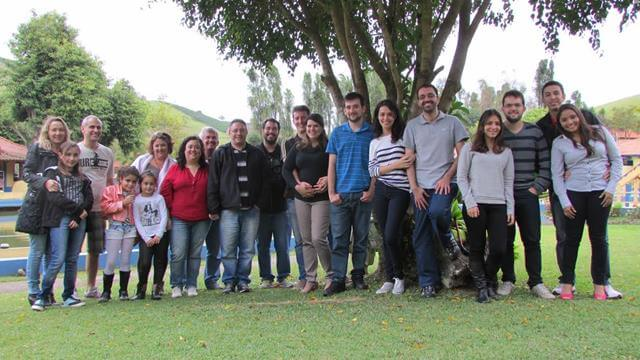
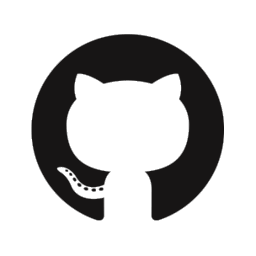

| PROGRAMA DE PÓS-GRADUAÇÃO EM CIÊNCIA E TECNOLOGIA DA COMPUTAÇÃO - UNIFEI | |
|  | |
| Área de Concentração | Matemática da Computação |
| Linha de Pesquisa | Inteligência Artificial |
| Projeto | Estudo e Pesquisa em Sistemas Anti-Spam |
| Orientador | Otávio Augusto Salgado Carpinteiro |
| Apresentação Preliminar | |
| Repositório no GitHub |  |